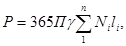
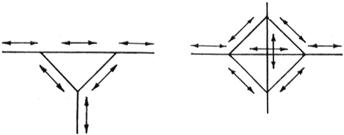
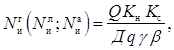
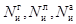
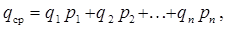

ВЕДОМСТВЕННЫЕ СТРОИТЕЛЬНЫЕ НОРМЫ
ИНСТРУКЦИЯ
ПО ПРОВЕДЕНИЮ ЭКОНОМИЧЕСКИХ
ИЗЫСКАНИЙ ДЛЯ ПРОЕКТИРОВАНИЯ
АВТОМОБИЛЬНЫХ ДОРОГ
ВСН 42-87
Минтрансстрой СССР
МИНИСТЕРСТВО
ТРАНСПОРТНОГО СТРОИТЕЛЬСТВА
СССР
МОСКВА 1988
РАЗРАБОТАНЫ Союздорнии Минтрансстроя СССР (кандидаты технических наук Н.Ф. Хорошилов - руководитель темы; Н.А. Рябиков; инж. Н.С. Беззубик) и Союздорпроектом Минтрансстроя СССР (инженеры Г.И. Шейнис, С.В. Узин, С.А. Беляков).
ВНЕСЕНЫ Союздорнии Минтрансстроя СССР.
ПОДГОТОВЛЕНЫ К УТВЕРЖДЕНИЮ Главным техническим управлением Минтрансстроя СССР.
С введением в действие «Инструкции по проведению экономических изысканий для проектирования автомобильных дорог» ВСН 42-87 с 1 января 1988 г. утрачивают силу "Методические указания по проведению экономических изысканий автомобильных дорог" ВСН 42-60.
СОГЛАСОВАНЫ с Госстроем СССР 11 февраля 1987 г. № АЧ-618-8.
|
Министерство транспортного строительства СССР (Минтрансстрой СССР) |
Ведомственные строительные нормы |
ВСН 42-87 |
|
Минтрансстрой СССР |
||
|
Инструкция
по проведению |
Взамен ВСН 42-60 |
Настоящие нормы устанавливают объем и порядок сбора и обработки материалов экономических изысканий, необходимых для разработки схем развития сети автомобильных дорог, технико-экономических обоснований (ТЭО) и технико-экономических расчетов (ТЭР).
1.1. Задача экономических изысканий - сбор, обработка, систематизация и анализ исходных данных для обоснования народнохозяйственных предпосылок развития сети автомобильных дорог, установления экономической целесообразности, очередности и последовательности строительства или реконструкции отдельных автомобильных дорог и сооружений на них.
1.2. Экономические изыскания обязательны для всех объектов дорожного строительства и их реконструкции.
|
Внесены Государственным всесоюзным дорожным научно-исследовательским институтом (Союздорнии) Минтрансстроя СССР |
Утверждены Минтрансстроем СССР 10 июля 1987 г. № 271-р |
Срок введения в действие 1 января 1988 г. |
В зависимости от объектов и целей проектирования экономические изыскания подразделяют на сетевые (для разработки схем) и титульные (ТЭО и ТЭР объектов).
1.3. Сетевые изыскания проводят для составления схем развития дорожной сети области (края), республики, экономического района, отдельных промышленных и транспортных узлов и других производственно-территориальных комплексов, а также Генеральной схемы развития сети автомобильных дорог страны в целом.
Титульные изыскания проводят для разработки ТЭО и ТЭР автомобильных дорог и сооружений на них.
1.4. Экономические изыскания для разработки схем развития сети автомобильных дорог имеют конечной целью наметить и обосновать перспективы развития дорожной сети района изысканий для планирования проектно-изыскательских работ и капитального строительства. В схеме, исходя из перспектив развития производительных сил, определяют потребность в мощности сети, размеры и очередность капитальных вложений в строительство и реконструкцию дорог с учетом наиболее рационального обеспечения транспортных связей народного хозяйства и населения; обосновывают технико-экономические рекомендации по строительству отдельных дорог (обосновывающие материалы), потребные материальные ресурсы; рассчитывают народнохозяйственную эффективность затрат как в целом по сети, так и по отдельным объектам.
В зависимости от целей планирования схему развития сети дорог можно разрабатывать на отдельные группы дорог, например магистральные автомобильные дороги общегосударственного значения, основные дороги общего пользования, дороги, обслуживающие внутрихозяйственные перевозки, и др.
Схему развития сети автомобильных дорог разрабатывают на перспективу 15 - 20 лет; она является основой для планирования строительства и реконструкции автомобильных дорог и составления ТЭО и ТЭР.
1.5. Цель экономических изысканий для ТЭО и ТЭР - получить данные и обосновать оптимальный вариант на. правления отдельных дорог, выбрать трассы дорог и местоположение мостовых переходов, а также обосновать основные проектные решения, расчетную стоимость строительства или реконструкции, очередность и народнохозяйственную эффективность капитальных вложений.
1.6. Дополнительные экономические изыскания следует проводить при необходимости уточнения исходных данных при разработке проектов.
1.7. Работы, выполняемые при экономических изысканиях, проводят в два этапа:
собирают необходимые исходные экономические и технические материалы;
обрабатывают и анализируют собранные материалы;
определяют исходные показатели для экономического и технического проектирования.
1.8. Основная цель работ первого этапа - сбор материалов, характеризующих размещение и развитие производительных сил рассматриваемого региона, направления и величины транспортных связей, объемы и направления грузовых и пассажирских перевозок, размеры и режим движения автомобилей, а также сбор других данных, позволяющих определить технические показатели и народнохозяйственную эффективность капитальных вложений.
1.9. Цель работ второго этапа - получить расчетные технико-экономические показатели, необходимые для обоснования как общих рекомендаций по развитию сети автомобильных дорог, так и конкретных решений по отдельным объектам строительства.
2.1. Экономические изыскания осуществляют проектные организации в соответствии с тематическим планом проектно-изыскательских работ или согласно специальному решению директивных (планирующих) органов.
2.2. Для проведения экономических изысканий, как правило, формируют отдельные комплексные группы, в состав которых включают экономистов, дорожников, геологов и других специалистов. Руководство работами возлагается на главного инженера проекта.
2.3. Экономические изыскания выполняют в пределах сроков, установленных заказчиком на выполнение проектно-изыскательских работ.
2.4. Изыскания подразделяют на три периода: подготовительный, полевой и камеральный.
2.5. В подготовительный период необходимо:
изучить задание на проведение технико-экономических изысканий или участие в его разработке;
определить по мелкомасштабным картам район предстоящих изысканий;
ознакомиться по материалам научно-исследовательских и проектных институтов, а также по литературным источникам с размещением производительных сил района изысканий и перспективами их развития;
ознакомиться с материалами ЦСУ СССР (по справочникам), характеризующими показатели современного состояния развития производительных сил района изысканий;
ознакомиться с размещением и перспективами развития транспорта и состоянием сети автомобильных дорог района изысканий;
предварительно определить все заслуживающие внимания варианты направления проектируемой дороги или сети дорог и отобрать наиболее вероятные варианты для полевого обследования;
составить сметы на проведение изысканий;
разработать программу работы применительно к специфике района изысканий и наличию материалов изысканий прежних лет.
2.6. В полевой период необходимо:
составить список грузообразующих и пассажирообразующих точек, в том числе строящихся и проектируемых предприятий, ввод в действие которых предусмотрен в течение расчетного срока (форма № 1 обязательного приложения 1);
составить перечень автомобильных порог и подъездов в районе изысканий с характеристикой их технического состояния (форма № 2 обязательного приложения 1);
собрать сведения об объемах и направлениях перевозок грузов и пассажиров автомобильным транспортом;
собрать сведения о перевозках, осуществляемых другими видами транспорта, для решения вопросов координации их работы с автомобильным транспортом;
изучить работу автотранспортных организаций и собрать данные, характеризующие транспортно-эксплуатационные показатели работы автомобильного транспорта для последующих расчетов интенсивности движения автомобилей;
изучить материалы местных проектных и научно-исследовательских организаций и плановых органов, характеризующих перспективы развития отраслей хозяйства, динамику численности и подвижности населения района тяготения;
собрать и изучить данные непосредственного учета движения автомобильного транспорта, проведенного дорожно-эксплуатационной службой за предшествующие 15 лет;
получить исходные данные для определения экономической эффективности капитальных вложений;
провести контрольный учет грузового и пассажирского движения силами проектной организации (преимущественно при титульных изысканиях);
предварительно рассчитать объемы и направления автомобильных перевозок и транспортных связей грузо- и пассажирообразующих пунктов;
получить консультации у местных специалистов;
составить рабочие схемы по вариантам сети или вариантам рассматриваемого объекта.
Для получения сведений от соответствующих организаций в их адрес необходимо направлять письма-запросы (см. рекомендуемое приложение 2).
2.7. В камеральный период проводят обработку материалов изысканий, собранных в подготовительный и полевой периоды, применительно к объекту изысканий, составу и стадии проектных работ.
2.8. Рассчитанные по материалам экономических изысканий объемы перевозок грузов за отчетный год и на перспективные сроки подлежат согласованию с местными плановыми органами с оформлением протокола (или письма), в котором должны быть отмечены:
полнота и качество собранных материалов;
ожидаемый в перспективе объем перевозок грузов по дороге (сети дорог) или средние за расчетный период темпы их роста.
2.9. Развертыванию работ в полевой период предшествует ознакомление местных исполкомов депутатов трудящихся, плановых и статистических органов с задачами и методикой предстоящей работы с целью получить необходимое содействие при проведении изысканий.
2.10. Основным объектом экономических изысканий являются транспортные связи, определяющие объемы и направления перевозок грузо- и пассажирообразующих пунктов рассматриваемого региона.
Поскольку эти показатели не фиксируют в формах статистической отчетности, их следует рассчитывать на основе собранной исходной информации по районам изысканий.
2.11. Под районом изысканий подразумевается регион, предположительно подлежащий обслуживанию проектируемой сетью дорог или отдельной дорогой (мостом).
2.12. В период полевого обследования границы района изысканий уточняют и в конечном счете выявляют район тяготения, т.е. территорию, которую будет обслуживать проектируемая сеть дорог или отдельная дорога (мост).
2.13. Районом сетевых изысканий является вся административно-территориальная единица (область, край, республика, экономический район), а также сопредельные районы и города соседних административно-территориальных единиц. При титульных экономических изысканиях районом изысканий, как правило, является территория, примыкающая к проектируемой дороге (мосту) и ограниченная крупными естественными рубежами или ближайшими автомобильными дорогами той же или более высокой категории, имеющими такое же или более важное административное и народнохозяйственное значение.
2.14. Материалы, характеризующие развитие производительных сил в перспективе и изменение в связи с этим размеров и направлений транспортных связей должны быть получены в государственных республиканских или областных (краевых) плановых комиссиях, а также в научно-исследовательских и проектных организациях, разрабатывающих схемы перспективного развития народного хозяйства отдельных областей, промышленных районов, промышленно-территориальных комплексов, районов сельскохозяйственного освоения (СОПС, Гипрогор, НИИ районной планировки, институты Генплана и т.п.).
Аналогичные материалы по отдельным отраслям народного хозяйства следует получать в отраслевых научно-исследовательских и проектных организациях (Гипрозем, Гипроводхоз, Гипролеспром, Гидропроект, Гипрониицемент, Гипромолоко, Гипросахар, Гипротранстэи, Промтрансниипроект, Союзморниипроект, Гипроречтранс и т.п.). Перечень этих организаций уточняют в процессе обследования в зависимости от особенностей народнохозяйственной специализации района изысканий.
2.15. В случаях, когда упомянутые в п. 2.6 проектные разработки отсутствуют, необходимо по согласованию с плановыми органами определить контуры района изысканий и основные направления развития его хозяйства, а также произвести исходные расчеты, определяющие качественные и количественные показатели транспортных связей на основе балансовых, нормативных и других расчетов.
2.16. Изучению подлежат: все виды транспорта в районе изысканий, их взаимодействие, размещение и перспективы развития; размещение и перспективы роста населения и населенных пунктов; размещение природных ресурсов и перспективы их освоения; размещение, специализация, производственные связи и перспективы развития всех отраслей народного хозяйства как в сфере производства, так и в сфере обслуживания населения.
2.17. Железные дороги в районе изысканий должны быть охарактеризованы как по протяженности, пропускной (провозной) способности отдельных железнодорожных линий, так и по наличию станций и узлов с оценкой их грузооборота. Особое внимание следует уделять тем станциям, грузооборот которых может оказать влияние на работу проектируемой сети автомобильных дорог, отдельной дороги (моста) в перспективе.
Водные пути следует изучать с точки зрения протяженности судоходных участков, сроков навигации, строительства каналов и водохранилищ, размещения портов и пристаней и их грузооборота, а также возможного взаимодействия водного транспорта с автомобильным при проектировании сети автомобильных дорог, отдельной дороги (моста).
Подробно следует изучать размещение и техническое состояние существующих автомобильных дорог: при сетевых изысканиях - как правило, все автомобильные дороги как общего пользования, так и другие в районе изысканий, при титульных - лишь те дороги, которые могут иметь экономическое значение по взаимосвязи с проектируемым объектом.
2.18. При определении объемов грузо- и пассажирооборота необходимо исходить из следующих основных требований, предъявляемых к транспорту:
перевозки грузов должны наиболее рационально распределяться между отдельными видами транспорта с учетом требований обслуживаемой клиентуры в установленные народнохозяйственным планом сроки;
перевозки пассажиров должны выполняться с полным удовлетворением потребностей населения в передвижении с необходимыми удобствами и минимальной затратой времени;
затраты на перевозку грузов и пассажиров и на связанные с ними операции должны быть минимальными.
2.19. В перечень (список) грузо- и пассажирообразующих точек следует включать все предприятия государственной добывающей и перерабатывающей промышленности, сельскохозяйственные предприятия, строительные организации, предприятия государственной и кооперативной торговли и сферы обслуживания населения, базы по заготовке сельскохозяйственных продуктов, а также дома отдыха, санатории, пионерские и туристские лагеря, базы и автотранспортные организации, осуществляющие грузовые и пассажирские перевозки. Перечни грузо- и пассажирообразующих точек составляют по данным областных статистических управлений.
2.20. Сбор экономических показателей необходимо производить, как правило, за отчетный год и на перспективные расчетные сроки с разбивной на промежуточные сроки, определяемые конечными годами периодов перспективного планирования (конечные годы соответствующих пятилеток).
За отчетный принимают год, предшествующий году проведения экономических изысканий, за который собирают сведения о существующих (современных) перевозках и другие экономические показатели. При отсутствии данных за отчетный год сведения о существующих перевозках получают из плановых материалов года обследования. За начальный год расчетного срока следует принимать год завершения разработки проектной документации (схемы, ТЭО, ТЭР). Последний год расчетного срока рекомендуется принимать кратным 5 или 10 (например, 1995 г., 2000 г. и т.д.).
2.21. Работы, связанные с изучением размещения и развития производительных сил и со сбором материалов о грузовых и пассажирских перевозках, проводят в полном объеме при разработке: схем автомобильных дорог союзных республик, не имеющих областного деления и областей; схем узлов дорог; ТЭО и ТЭР и технико-экономической характеристики дороги в составе проекта при отсутствии ТЭО или ТЭР на данный объект. При разработке технико-экономической характеристики в составе проекта и при наличии на данный объект ТЭО или ТЭР используют материалы последних. Дополнительно изучают материалы, относящиеся к периоду между разработкой ТЭО и ТЭР и проекта дороги.
2.22. При разработке в целях планирования Генеральной схемы развития сети автомобильных дорог общегосударственного, и республиканского значения, схемы развития сети магистральных автомобильных дорог, схем дорог крупных экономических районов и регионов в качестве исходных используют материалы схем развития сети автомобильных дорог областей (союзных республик, не имеющих областного деления).
2.23. При уточнении схем развития сети дорог всех классификационных категорий следует использовать материалы экономических изысканий, проведенных при разработке схем на данный расчетный период. При необходимости экономические изыскания для уточнения схем дорог можно проводить в полном объеме или выборочно, применительно к отдельным регионам (районам) и видам работ, что должно быть соответственно оговорено в задании и программе на их разработку.
2.24. Результаты экономических изысканий должны быть рассмотрены областной плановой комиссией и отражены в протоколе (см. обязательное приложение 3) или письме аналогичного содержания.
Грузовые перевозки
3.1. Источниками сведений об объемах и направлениях грузовых автомобильных перевозок служат:
специальные бланки, рассылаемые во все грузообразующие точки и подлежащие заполнению по форме № 3 обязательного приложения 1;
выписки из планов перевозок грузов по предприятиям и организациям областей, составляемые автохозяйствами на основании заявок грузоотправителей и договоров на перевозку грузов с учетом применяемых нормативов;
материалы статистической отчетности о работе автомобильного транспорта (форма № 1 статистической отчетности "Автотранспорт");
показатели объема валовой продукции промышленности, сельского хозяйства, а также объема строительства, товарооборота торговли, объема оказываемых услуг предприятиями и организациями сферы обслуживания, численности населения всех корреспондирующих пунктов.
По материалам статистического учета автотранспортных предприятий можно получить данные о наличии и работе грузового автомобильного транспорта и себестоимости грузовых автомобильных перевозок, а также данные о распределении перевозок, выполненных автомобильным транспортом общего пользования по грузоотправителям и по родам грузов (уголь, нефтепродукты, руда, кирпич и т.д.) и данные о регулярных междугородних (централизованных) перевозках грузов по основным маршрутам и выполненном грузообороте.
3.2. Сведения об объемах, видах и направлениях перевозок необходимо собирать по каждой грузообразующей точке.
3.3. На все предприятия и в организации, включенные в список грузообразующих точек, рассылают запросы от имени Госплана республики, областного (краевого) исполнительного комитета Совета народных депутатов (см. рекомендуемое приложение 2), в которых кратко излагают задачи экономических изысканий и предлагают представить сведения обо всех автомобильных перевозках в районе изысканий за отчетный год и на перспективные сроки.
3.4. При группировке и анализе сведений о направлении и объемах перевозок грузов необходимо учитывать повторные перевозки (например, вывоз сельскохозяйственной продукции с полей на базы кратковременного хранения, а затем их транспортировку в торговую сеть или на перерабатывающие предприятия), исключая при этом дублирование уже учтенных перевозок и транспортных связей.
Группировку и учет грузов, подлежащих перевозке автомобильным транспортом, следует осуществлять, как правило, по принципу "вывоза". Принимать во внимание перевозки, учтенные по категории "ввоза", следует лишь в случаях, когда данные по категории "вывоз" получить невозможно.
3.5. Для характеристики объемов грузовых перевозок и определения интенсивности движения автомобилей с учетом грузоподъемности подвижного состава необходимо установить структуру грузовых перевозок по определенной номенклатуре, отражающей отраслевую принадлежность, способ перевозки или виды отправок.
3.6. По отраслевому признаку грузы подразделяют на следующие группы:
А - промышленные;
Б - сельскохозяйственные;
В - лесопромышленные;
Г - строительные;
Д - торговые и прочие.
3.7. По способу перевозки различают грузы: навалочные (сыпучие и прочие), наливные, скоропортящиеся, длинномерные и негабаритные; тарные, в контейнерах; по видам отправок (подсортировки): повагонные, мелкопартионные, контейнерные.
3.8. При группировке сведений о перевозках грузов и транспортных связях отнесение того или иного груза к определенной группе производят по группировочному признаку предприятия или организации, осуществляющих вывоз груза (например, овощи, вывозимые из совхоза на заготовительные базы, должны быть отнесены к группе сельскохозяйственных грузов, а овощи, вывозимые с торговых баз в розничную сеть, должны быть отнесены к группе торговых).
3.9. При определении перспективных объемов перевозок грузов промышленности рекомендуется использовать нормативы автоперевозок относительно объемов производства за отчетный год, экстраполируя их на перспективу с учетом улучшения технологических и эксплуатационных показателей автотранспорта.
3.10. Отчетные данные о перевозках грузов в сельском хозяйстве следует получать из годовых отчетов колхозов и совхозов в органах ЦСУ. В расчет следует принимать, как правило, вывоз товарной части всей сельскохозяйственной продукции, а в отдельных случаях - всей продукции, удобрений, тары и т.п.
Данные о перспективных объемах перевозок грузов сельского хозяйства и для сельского хозяйства следует получать в областных (республиканских) сельскохозяйственных и плановых органах, используя одновременно материалы имеющихся районных планировок. В случае отсутствия данных о перспективах перевозок указанных грузов следует производить ориентировочные расчеты и балансовые прикидки.
3.11. Товарную продукцию полеводства по каждой культуре определяют, вычитая из валовой продукции продукцию, реализуемую на месте.
В хозяйствах, специализирующихся на технических культурах (хлопке, сахарной свекле и др.), товарная продукция, как правило, соответствует валовой продукции.
В животноводстве валовую продукцию определяют по продуктивности скота исходя из его перспективной численности.
3.12. Перспективную потребность колхозов и совхозов в автомобильных перевозках следует определять исходя из перспектив увеличения посевных площадей, поголовья скота, численности населения, из планов строительства жилых зданий и производственных сооружений, а также с учетом возможного изменения видов выращиваемых сельскохозяйственных культур, которое может возникнуть в результате строительства автомобильной дороги и привести к значительному изменению объемов перевозимых грузов.
3.13. К учитываемым перевозкам грузов лесной промышленности относят внехозяйственные перевозки, осуществляемые лесхозами, леспромхозами и их отделениями.
Следует предусматривать возможное в перспективе перебазирование некоторых грузообразующих течек лесной промышленности.
3.14. Сведения о перевозках строительных грузов (их объемах и направлениях) получают в соответствующих плановых органах и строительных организациях.
Перевозки строительных грузов учитывают при расстоянии возки более 2 км (вне пределов строительной площадки).
При отсутствии данных, характеризующих объемы перевозок строительных грузов в настоящее время и на расчетные сроки, их следует рассчитывать на основе нормативов расхода строительных материалов на 1 млн. руб. сметной стоимости строительства или строительно-монтажных работ отдельно для промышленного, сельского и гражданского строительства в соответствии с намеченными объемами капитальных вложений.
3.15. Перевозки торговых грузов следует рассчитывать по данным центральных и областных органов государственной и кооперативной торговли. Отчетные данные об объемах и направлениях перевозок грузов торговой сети необходимо получать из годовых отчетов о товарообороте. Перевод стоимостных показателей в массовые производят путем вычисления средневзвешенной стоимости одной тонны продовольственных и промышленных товаров или исходя из норматива этой стоимости.
3.16. Объем перспективных перевозок торговых грузов определяют из запланированного объема розничного товарооборота на расчетный период. При этом учитывают возможные изменения в размещении пунктов вывоза потребительских грузов в торговую и снабженческую сеть.
По сфере обслуживания населения материалы собирают в целом по району изысканий в разрезе административных районов. Сведения включают данные о количестве предприятий и организаций, объеме оказываемых услуг.
3.17. При выявлении объемов грузовых перевозок следует предусматривать возможность перераспределения перевозок отдельных категорий грузов между видами транспорта.
С целью установить возможные размеры перевозок, переключаемых с железнодорожного или водного транспорта на автомобильный, в управлениях (отделениях) железных дорог, пароходствах необходимо получить данные об объемах перевозок в районе изысканий, осуществляемых на расстояние до 300 км. Повагонные короткопробежные перевозки могут быть рассчитаны по заявкам грузоотправителей, подаваемым в управления (отделения) железных дорог.
При наличии в районе изысканий большого количества железнодорожных станций, портов и пристаней со значительным грузооборотом по прибытию и отправлению к определению размеров короткопробежных перевозок следует привлекать станции механизированного учета, которые, как правило, проводят эту работу на базе статистической отчетности.
3.18. Сведения о короткопробежных железнодорожных перевозках должны содержать:
пункт отправления;
пункт назначения;
схему перевозки с учетом наличия подъездных железнодорожных путей. (Схемы могут быть: ПП-МЖД-ПП, А-МЖД-ПП, А-МЖД-А, где МЖД - перевозка по магистральной железной дороге; ПП - по подъездному пути; А - автомобильным транспортом);
указание отправителя и получателя;
наименование, род и массу груза;
расстояние перевозки и направление (груженое или порожнее).
При определении объемов короткопробежных железнодорожных перевозок по заявкам отправителей, в случае отсутствия подробных данных о массе перевозимого груза, ее определяют на основании утвержденных МПС технических норм загрузки вагонов.
3.19. Расчет объемов короткопробежных перевозок производят по укрупненным группам грузов в зависимости от их характера и рациональной дальности перевозки автомобильным транспортом по сравнению с железнодорожным и водным.
3.20. Перспективные объемы перевозок короткопробежных грузов следует устанавливать на основании анализа существующих перевозок и имеющихся плановых и проектных разработок по развитию соответствующих отраслей народного хозяйства, с учетом перспектив развития транспортной сети района изысканий.
3.21. Объем перевозок грузов, передаваемых с железнодорожного транспорта на автомобильный в связи с закрытием малодеятельных железнодорожных станций, и сроки их передачи необходимо устанавливать по согласованию с управлениями железных дорог.
3.22. Целесообразность переключения железнодорожных перевозок на автомобильный транспорт дол ж н а быть подтверждена расчетом.
3.23. Сбор материалов о грузовых перевозках завершают подведением итогов и вычислением объемов перевозок; полученные данные согласовывают с местными плановыми органами. Общие итоги за отчетный год следует сопоставить с данными транспортной статистики в республиканских, областных (краевых) статистических управлениях.
Пассажирские перевозки
3.24. Перевозки пассажиров осуществляются транспортом общего пользования (автобусы, такси), ведомственным (автобусы, легковые автомобили), индивидуального пользования (легковые автомобили, мотоциклы, мотороллеры).
3.25. Объем перевозок пассажиров автобусами, а также данные о развитии автобусного движения в перспективе следует определять на основе данных, полученных от пассажирских автотранспортных хозяйств общего пользования (облавтотрестов, управлений пассажирского транспорта и т.п.), а также от ведомственных автохозяйств, осуществляющих регулярные перевозки
3.26. Для наглядности рекомендуется составить схему автобусных маршрутов и нанести на нее основные пассажирообразующие и пассажиропоглощающие пункты.
3.27. Сведения об автобусных перевозках по всем видам автохозяйств группируют в ведомости пассажирских автобусных маршрутов (форма № 5 обязательного приложения 1).
3.28. На основе заполненной таблицы по маршрутам заказных и ведомственных автобусов составляют сводную таблицу пассажирооборота на автобусном транспорте, в которой указывают количество автобусов на линиях, среднюю их вместимость, объемы пассажирских перевозок, пассажирооборот и среднюю дальность ездки.
3.29. Ввиду того, что изучение объемов пассажирских перевозок, осуществляемых легковыми автомобилями, затрудняется из-за отсутствия статистических данных об автомобилях личного пользования, целесообразно при сборе материалов:
а) изучить отчетные данные по таксомоторному парку и материалы учета движения, проводимого дорожно-эксплуатационной службой;
б) использовать материалы контрольных наблюдений за движением легковых автомобилей по дорогам.
Для контрольного учета следует выбирать пункты с характерным размером движения легковых автомобилей, осуществляющих перевозки между населенным и пунктами различной административной значимости: сельскими населенными пунктами, поселками городского типа, городами районного подчинения, районными центрами и т.д. и зонами отдыха. На основании этих данных и сопоставления их с данными учета, проводимого дорожно-эксплуатационной службой, определяют расчетную транспортную работу и подвижность населения по пассажирским перевозкам легковыми автомобилями.
3.30. Транспортная работа легковых автомобилей по внегородским сообщениям ( Р, пасс. км) может быть рассчитана по формуле

где П - пассажировместимость одного легкового автомобиля;
g - средний коэффициент использования вместимости;
Ni - среднегодовая суточная интенсивность движения легковых автомобилей на дорогах, обеспечивающих связи с населенными пунктами различной административной категории;
n, li - количество групп и протяженность автомобильных дорог, обеспечивающих связи с населенными пунктами различной административной значимости.
3.31. Данные о количестве и направлении поездок могут быть получены также путем выборочного анкетирования владельцев легковых автомобилей.
3.32. На основе суммарных данных об объемах перевозок пассажиров за отчетный период определяют транспортную подвижность населения как отношение количества перевезенных пассажиров к численности населения района изысканий.
3.33. Определение объемов перевозок на перспективу следует определять по показателю транспортной подвижности, т.е. показателю вероятных поездок, которые совершит в среднем один житель в год.
3.34. К числу факторов, влияющих на формирование пассажиропотоков и их распределение на транспортной сети, относят расселение жителей относительно места их работы и отдыха, плотность населения, степень обеспеченности транспортом.
3.35. Для установления подвижности населения в отдельных случаях целесообразно проводить анкетные выборочные обследования для выявления целей поездок населения. При этом следует различать поездки трудовые, культурно-бытовые и др.
Важно при определении пассажиропотоков подробно изучать размещение и "пассажироемкость" населенных пунктов, зон расселения и отдыха населения по сезонам года (санатории и курорты, пионерские и туристские лагеря, места массового туризма и экскурсий и т.д.), перспективы их развития.
Эти сведения, а также нормативы подвижности населения могут быть получены в организациях, разрабатывающих проекты районных планировок (Гипрогор и др.).
4.1. В район изысканий кольцевых и обходных автомобильных дорог необходимо включать территорию города в пределах его перспективных границ и пригородную зону.
4.2. Для изучения основных транспортных связей территорию района изысканий согласно материалам проекта районной планировки, генеральному плану города, схеме комплексного развития транспорта и другим планировочным и проектным проработкам разбивают на функциональные зоны: селитебные (для размещения жилых районов, общественных центров), промышленные, коммунально-складские, транспортные и зоны отдыха.
4.3. Существующие и намечаемые генеральным планом функциональные зоны, а также сеть улиц и дорог района изысканий представляют в виде карты-схемы. Составляют характеристику дорожно-уличной сети: выявляют дороги и улицы, обеспечивающие пропуск через город транзитного транспорта и перевозки между функциональными зонами, их протяженность и пропускную способность.
4.4. При экономических изысканиях обходных дорог, имеющих локальный характер (соединяющих две или более соседние подходящие к городу дороги), территория района изысканий может быть сокращена за счет исключения зон, транспортные связи которых по критериям протяженности и времени сообщения нецелесообразно обслуживать проектируемой обходной дорогой.
4.5. В пределах уточненных границ района изысканий обследованию подлежат все грузо- и пассажирообразующие пункты, транспортные связи которых группируются по функциональным зонам.
4.6. Для установления интенсивности и режимов движения на основных улицах и дорогах необходимо провести контрольный учет движения, хронометраж скоростей и задержек транспорта на пересечениях.
4.7. При сопоставлении интенсивности движения и пропускной способности дорожно-уличной сети определяют возможность пропуска транзитного движения через город в перспективе, что позволит выбрать варианты размещения кольцевых и обходных дорог и их технические параметры.
4.8. Для удобства сравнения вариантов кольцевых и обходных дорог транспортные связи в районе их тяготения группируют по следующим признакам:
связи, которые целесообразно обслуживать с использованием кольцевой или обходной дороги по маршрутам: город - город; город - пригородная зона; пригородная зона - пригородная зона;
связи, пересекающие кольцевую или обходную дорогу по маршрутам: город - пригородная зона и пригородная зона - пригородная зона.
4.9. При экономических изысканиях для обоснования строительства мостовых переходов в район изысканий следует включать территорию между соседними постоянно действующими мостовыми переходами.
Если проектируется разместить мостовой переход в районе транспортных узлов, то район изысканий может быть расширен, поскольку задача обоснования габаритов и местоположения мостового перехода будет иметь сетевой характер и она должна быть увязана с общими задачами развития транспортного узла (например, вынесением из центра узла транзитного движения).
4.10. Особое внимание при экономических изысканиях для обоснования строительства мостовых переходов следует обратить на учет перепробега автомобильных транспортных средств, связанного либо с отсутствием мостового перехода, либо с перерывом в работе временных переправ, а также на сбор показателей для определения дополнительных капитальных вложений в автомобильный транспорт, дополнительных затрат на создание запасов при перерывах в работе временных переправ.
4.11. При наличии ледовых переправ, наплавных мостов или паромов в районе тяготения проектируемого мостового перехода необходимо дополнительно запрашивать организации и предприятия о потерях, связанных с перерывами в движении через водоток, а также о нереализованных в связи с этим возможностях развития производства, более рационального использования трудовых и природных ресурсов.
В дорожно-эксплуатационных или коммунальных органах необходимо получить сведения: о затратах на содержание и периодическую ликвидацию и организацию переправы; об интенсивности и режимах движения автомобилей на переправе; о времени, необходимом для переправы одного автомобиля; о периодах эксплуатации и продолжительности перерывов движения (при ликвидации переправы в период паводка или ледостава и в периоды проводки судов).
В случае отсутствия таких данных следует изучить режим работы переправы, провести учет движения с контрольным опросом водителей о маршрутах следования.
4.12. При определении среднего времени, необходимого для переправы автомобиля, следует учитывать:
время ожидания парома или время, связанное с замедлением движения при подходах и съездах с наплавного моста (сюда включается время на задержки в очереди к переправе, время швартовки, опускания и подъема аппарелей);
продолжительность движения парома (продолжительность переезда по наплавному мосту);
продолжительность погрузки и выгрузки автомобилей.
При определении годовых потерь времени следует учитывать также потери времени на ледовой переправе при перерывах в ее работе.
4.13. Цель экономических изысканий для обоснования строительства или реконструкции транспортных пересечений - получение исходных данных для определения количества, местоположения, вида (пересечение, примыкание, отмыкание), типа и схемы пересечений автомобильных дорог.
4.14. На основе данных о распределении потоков автомобилей по отдельным направлениям на существующих пересечениях и данных о перспективных транспортных связях необходимо составлять график распределения интенсивности движения по схеме, приведенной на рисунке, с расчетом интенсивности движения на каждом его элементе (главная или второстепенная дорога, право- и левоповоротные съезды). Показатели интенсивности движения изображают на каждом элементе цифрами. Этот график в дальнейшем служит для назначения параметров каждого элемента и определения исходных данных о потерях времени при движении автомобилей на пересечениях в одном уровне.
|
Для примыкания |
Для пересечения |
|
 |
|
|
Схема транспортных связей |
|
4.15. Для обоснования типа пересечения автомобильной дороги с железной дорогой при проведении экономических изысканий необходимо получить сведения об интенсивности и режимах движения автомобилей и железнодорожных поездов.
5.1. Объем и детализация собираемых сведений для расчета экономической эффективности капитальных вложений в дорожное строительство определяются общими задачами экономических обследований.
5.2. Собранные сведения должны быть достаточными для установления суммы приведенных затрат по реализации транспортных связей при определенных дорожных условиях с учетом всех видов эффектов и потерь во внетранспортной сфере. На основе сопоставления указанных затрат и потерь при сохранении существующих условий перевозок с затратами по реализации транспортных связей при новых дорожных условиях устанавливают эффективность капитальных вложений, обусловленных соответствующим изменением дорожных условий.
5.3. Затраты по реализации транспортных связей (в том числе и при существующих дорожных условиях, рассматриваемых как исходный вариант) включают: строительные затраты (строительство новой, реконструкция существующей дороги и т.п.); транспортные расходы; расходы на ремонт и содержание дороги; потери, связанные с дорожно-транспортными происшествиями; потери в сфере производства различных предприятий и организаций, в том числе сельскохозяйственных, обслуживаемых дорогами; потери общего характера, связанные с неудовлетворительными дорожными условиями (внетранспортные потери).
5.4. Строительные затраты на сооружение и реконструкцию конкретных дорог в зависимости от цели и стадии выполнения проектных работ устанавливают на основе сметно-финансовых расчетов, различных укрупненных сметных показателей, расходов на сооружение объектов-аналогов, показателей нормативных удельных капитальных вложений в строительство автомобильных дорог.
5.5. В период экономических обследований собирают данные, характеризующие фактические затраты на грузовые и пассажирские перевозки в зависимости от климатических и других природных условий, сезонности и характера перевозок, а также затраты на все другие виды транспортного обслуживания хозяйств и населения, в том числе:
фактические вклады в автомобильный транспорт, занятый перевозкой грузов;
потери вследствие простоев автомобилей, вызываемых временными перерывами движения из-за непроезжаемости дорог;
потери, вызываемые перепробегами транспортных средств по извилистым в плане дорогам, при объездах труднопроезжаемых участков или из-за движения по объездам;
затраты или потери из-за вынужденной перевозки части грузов тракторами вместо автомобилей или из-за буксировки автомобилей тракторами;
потери из-за простоев транспортных средств в ожидании возможности проезда на пересечениях автомобильных дорог в одном уровне, у паромных и других неблагоустроенных переправ через реки в период массовых перевозок (например, во время уборки урожая);
потери, вызываемые необходимостью приобретения и содержания дополнительного парка транспортных средств вследствие их низкой производительности при плохих дорожных условиях;
затраты и потери при пассажирских перевозках.
5.6. Расходы на ремонт и содержание существующих дорог общего пользования (за последние пять лет) следует устанавливать по фактическим данным местных дорожных органов, а дорог другого назначения - по данным совхозов и колхозов или организаций, в ведении которых находятся эти дороги. К подобным расходам следует также относить расходы на зимнее содержание дорог, восстановление проезжаемости дорог в периоды распутицы и после нее, на расчистку дорог от снежных заносов, лавин, осыпей, оползней и т.п., организацию и содержание переправ и др.
5.7. При разработке схем развития сети автомобильных дорог, ТЭО строительства и реконструкции отдельных дорог или их участков необходимо учитывать показатели удобства и безопасности движения, а также потери от дорожно-транспортных происшествий (ДТП). Учет потерь от ДТП имеет особенно важное значение при решении вопросов очередности реконструкции отдельных участков дорог.
Для определения потерь от ДТП в отделах ГАИ и дорожно-эксплуатационной службы должны быть получены данные о количестве и видах ДТП на существующих дорогах за ряд лет (от двух до пяти).
5.8. Внетранспортные потери отраслей народного хозяйства включают:
потери различных предприятий и организаций (в том числе предприятий по первичной переработке сельскохозяйственных продуктов и строительных организаций), вызываемые перебоями в снабжении сырьем и материалами; потери в сельском хозяйстве, обусловленные плохим состоянием дорог;
потери за счет простоя вагонов или речных судов и хранения грузов на территориях железнодорожных станций и пристаней вследствие невозможности свое -временного вывоза грузов;
потери, связанные с необходимостью досрочного завоза грузов и их хранения (площадки, навесы, склады на территориях предприятий, строительных площадках, железнодорожных станциях и в других местах), приводящего к снижению качества многих видов продуктов, сырья, материалов (например, снижение активности минеральных вяжущих материалов при длительном хранении) и др.
5.9. При обследовании должны быть собраны данные о ценности и продуктивности земель, предполагаемых к постоянному или временному отчуждению для строительства дорог и дорожных сооружений.
5.10. Наряду с экономическими показателями следует по возможности учитывать социально-политические, культурные, санитарно-медицинские и организационно-хозяйственные показатели, не поддающиеся стоимостной оценке, но во многих случаях играющие существенную роль (особенно при близких по вариантам технико-экономических показателях).
6.1. Сведения о фактической интенсивности и составе движения, служащие вспомогательным материалом, на основе которого устанавливают показатели, необходимые для расчета перспективной интенсивности движения, следует получать в дорожно-эксплуатационных органах за предшествующие 10 - 15 лет. Анализ данных за ряд лет позволяет выявить закономерности изменения интенсивности движения автомобилей и других транспортных средств за прошедшие годы и сделать предварительные прогнозы ожидаемого в перспективе роста интенсивности движения.
6.2. В дополнение к регулярному учету движения, проводимому органами дорожно-эксплуатационной службы, при экономических изысканиях проектная организация должна проводить контрольный учет движения с остановкой автомобилей и опросом водителей; допускается автомобили не останавливать, но фиксировать типы и марки автомобилей и литеры номерных знаков.
6.3. Проведение контрольного учета движения автомобилей при разработке схем развития сети автомобильных дорог административных областей (союзных республик, не имеющих областного деления), ТЭО, ТЭР а также технико-экономической характеристики проекта, при отсутствии ТЭО и ТЭР, является обязательным.
6.4. Количество учетных пунктов, виды учета и порядок проведения определяет главный инженер проекта в соответствии с утвержденной программой работ.
6.5. Количественный учет движения проводят, как правило, в период максимальных перевозок (летний сезон) в рабочие дни недели в течение 8 - 12-диевных часов (с 8 - 10 ч утра), а на пересечениях и примыканиях с незначительными размерами движения (до 1000 авт./сут) - в течение не менее 3 ч.
В ночное время проводят выборочный учет в период с 20 ч до 8 ч.
Для определения неравномерности движения по направлениям регистрировать проходящие автомобили следует раздельно для каждого направления.
6.6. Количественный учет движения автомобилей необходимо проводить в наиболее характерных (опорных) пунктах, расположенных, как правило, в тех же местах, что и учетные пункты дорожно-эксплуатационных организаций: на подходах к городам, на границе области, на пересечениях и примыканиях с высокой интенсивностью движения, на крупных мостовых переходах, на подъездах к зонам отдыха, а также на дорогах, характеризующих размеры движения по связям с населенными пунктами различной административной категории.
Кратковременный трех-, четырехчасовой количественный учет движения при разработке ТЭО, ТЭР и технико-экономических характеристик проекта следует проводить на всех примыканиях и пересечениях существующей автомобильной дороги, а также выборочно при проведении экономических изысканий для разработки областных схем и для других целей.
Для определения среднегодовой суточной интенсивности движения по данным кратковременного учета движения можно использовать коэффициенты перехода, приведенные в рекомендуемом приложении 4.
6.7. Для учета транзитных перевозок на автомобильных дорогах общегосударственного и республиканского значения количественный учет движения с регистрацией литеров номерных знаков автомобилей следует проводить в опорных пунктах, ближайших к границе области, и на всех дорогах, подходящих к областному центру или другим крупным населенным местам, в ближайших к ним учетных пунктах.
6.8. Для установления сезонных колебаний движения количественный учет движения следует проводить в 3 - 4 опорных учетных пунктах в различные периоды года.
6.9. На выходах из крупных городов, характеризующихся значительным увеличением интенсивности движения в вечерние часы летних воскресных дней, для установления интенсивности, соответствующей 50-му часу максимальной интенсивности движения, рекомендуется в эти часы проводить 5 - 6-разовый учет движения до середины сентября при благоприятных для отдыха погодных условиях.
6.10. При наличии материалов ранее проведенных обследований движения объем работ по его учету может быть сокращен.
6.11. Контрольный учет движения с опросом водителей следует проводить на дорогах с высокими размерами транзитных перевозок в ближайших к границе области пунктах, у крупных населенных пунктов, у мостовых переходов и паромных переправ.
Фиксирование сведений, получаемых во время контрольного учета, производят на бланках или карточках (формы № 1, 2 рекомендуемого приложения 5).
6.12. Контрольный учет движения с остановкой автомобилей и опросом водителей позволяет выявить, проконтролировать и уточнить:
данные о транспортных связях по видам грузов;
соотношение местных и транзитных перевозок;
технико-экономические показатели работы автотранспорта (среднюю грузонапряженность, коэффициенты использования грузоподъемности и пробега);
ведомственную принадлежность транспортных средств, в том числе долю перевозок, осуществляемых транспортом общего пользования;
соотношение централизованных и децентрализованных перевозок;
объем неподдающихся учету при экономических обследованиях транзитных перевозок;
удельный вес транспортных средств, поездки которых связаны с перевозками незначительных по объему грузов различного хозяйственного и культурного назначения;
направления и размеры пассажирского движения;
распределение потока автомобилей между зонами города.
6.13. Контрольный учет движения автомобилей необходимо проводить с разрешения, а при учете с опросом водителей и при участии работников ГАИ с соблюдением мер безопасности движения транспортных средств и пешеходов, а также правил техники безопасности и охраны труда работников, выполняющих учет.
6.14. При учете движения применяют следующие метопы опроса водителей:
устный опрос водителей (наиболее распространен в СССР);
вручение водителям при кратковременной остановке карточки-анкеты, которые они заполняют после рейса и возвращают через диспетчера автотранспортного предприятия.
6.15. При контрольном учете с остановкой автомобилей и опросом водителей одновременно следует проводить количественный учет интенсивности движения с регистрацией всех проходящих по дороге в обоих направлениях транспортных средств.
6.16. В каждом опросно-учетном пункте в течение периода экономических обследований рекомендуется проводить не менее двух наблюдений.
6.17. Число учетчиков на учетном пункте определяют по количеству проходящих по дороге автомобилей из расчета (на одного учетчика): при проведении опроса водителей - 30 авт./ч; при учете с регистрацией литеров - до 500 авт./ч; без регистрации литеров - до 1000 авт./ч.
6.18. При проведении учета движения с опросом водителей остановке не подлежат маршрутные автобусы и такси, а также автомобили специального назначения (пожарные, медицинские, технической помощи и т.п.).
6.19. Одновременно с контрольным учетом движения в отдельных случаях следует проводить хронометраж движения автомобилей, цель которого - получить фактические данные о времени проезда, скоростях движения и задержках на отдельных участках автомобильных дорог, на паромных переправах, на пересечениях автомобильных дорог с железными дорогами, на основных улицах и дорогах в городах при изысканиях обходных и кольцевых автомобильных дорог.
6.20. Хронометраж можно проводить с использованием автомобиля во время его движения по маршруту, специальных передвижных лабораторий на базе автомобилей, имеющих приборы и оборудование для регистрации скоростей движения и других показателей, а также посредством фиксации отсчетов времени проезда автомобилей через створы, установленные друг от друга на определенные расстояния.
6.21. Хронометраж проводят по каждому маршруту дважды: в прямом и обратном направлениях. Запись результатов наблюдений производят на специальном бланке (форма № 3 рекомендуемого приложения 5).
6.22. Схему размещения пунктов наблюдения при хронометрировании наносят на оборотной стороне бланка (форма № 3 рекомендуемого приложения 5). Там же делают отметки о состоянии погоды, условиях движения и состоянии проезжей части на отдельных участках, а также приводят сведения о типе и марке автомобиля или данные о передвижной лаборатории, с использованием которой производят хронометраж.
7.1. Все полученные при экономических изысканиях материалы, характеризующие объемы и направления перевозок, интенсивность, состав и неравномерность движения автомобилей на дорогах, общеэкономические показатели развития и размещения производительных сил, подлежат обработке для последующего анализа и использования на этапе технико-экономического проектирования.
При большом объеме информации целесообразна автоматизированная обработка материалов экономических изысканий.
7.2. По материалам экономических изысканий транспортные связи необходимо группировать по отдельным грузо- и пассажирообразующим пунктам и функциональным зонам и составлять ведомость транспортных связей (или "шахматку") района изысканий (форма № 6 обязательного приложения 1).
Для этого необходимо проверить и откорректировать транспортные связи, представленные по форме № 3 обязательного приложения 1.
Транспортные связи, учтенные для данного пункта по ввозу и вывозу, должны быть сверены с корреспонденциями прочих пунктов по связям с данным пунктом и в случае расхождения уточнены. При составлении ведомости транспортных связей по форме № 6 обязательного приложения 1 и последующем расчете общего объема перевозок во избежание двойного счета учитывают связи по вывозу (обычно более точные), а также связи по ввозу из пунктов, расположенных вне района изысканий. Корреспонденции следует предварительно суммировать в черновой ведомости транспортных связей или в косой таблице.
При автоматизированной обработке материалов экономического обследования группировать и суммировать корреспонденции следует непосредственно по первичной форме № 3а обязательного приложения 1 или по карточкам обследования с разработкой на их основе данных о грузонапряженности и т.д.
Ведомости транспортных связей составляют раздельно по каждой группе связей. Различают следующие группы транспортных связей: внутриобластные (пригородные, внутрирайонные и межрайонные), межобластные, межреспубликанские, международные.
7.3. Группировка транспортных связей дает возможность:
определить направление перевозок в районе тяготения;
выявить соответствие между производственно-транспортными связями и направлениями путей сообщений;
выявить и рассчитать грузовые потоки, а затем грузонапряженность отдельных дорог и экономических перегонов.
Для наглядного изображения величины и направления отдельных транспортных связей по крупным объектам рекомендуется составлять карту-схему транспортных связей (за отчетный год и на расчетный срок).
Разработку ведомости транспортных связей завершают суммированием объемов перевозок и составлением ведомости объемов автомобильных перевозок (форма № 7 обязательного приложения 1).
7.4. На основе ведомости транспортных связей разрабатывают схемы грузопотоков по дорогам и вычисляют грузонапряженность и грузооборот дорог и отдельных участков.
Для определения грузооборота участков, т.е. массы грузов в тоннах, перевозимых по ним в обоих направлениях за год, вычерчивают графики-схемы существующей и проектируемой сети дорог или вариантов дороги с подъездами, на которые по каждой группе грузов наносят данные о размерах и направлении следования от начального к конечному пункту по данной транспортной связи.
Разноску грузов осуществляют исходя из минимального пробега по сети дорог или минимального времени сообщения. Каждую корреспонденцию соответствующей группы грузов фиксируют справа от условной оси дороги или ее участка на графике-схеме.
Аналогичную разноску корреспонденции составляют по пассажирским перевозкам.
При автоматизированной обработке данных экономических обследований и разноске грузо- и пассажиропотоков указанные выше показатели представляют в распечатке в виде кодированной таблицы.
7.5. Сводную ведомость грузонапряженности, грузооборота и интенсивности движения по перегонам дороги (форма № 8 обязательного приложения 1) составляют с учетом возможного перераспределения транспортных связей по сети автомобильных дорог и на другие виды транспорта.
7.6. По материалам учета движения за 10 - 15-летний период устанавливают среднегодовую суточную интенсивность движения; состав движения по типам автомобилей, в том числе грузовых автомобилей по их грузоподъемности; изменение интенсивности движения по месяцам в течение года, по часам в течение суток и темпы ее роста за прошедший период по типам автомобилей на отдельных участках дороги, по дороге и сети дорог в целом. Показатель неравномерности движения определяют как отношение максимальной интенсивности движения к средней за этот же период интенсивности движения автомобилей.
7.7. По материалам контрольного учета движения без опроса водителей устанавливают (уточняют) размеры и состав движения, изменение интенсивности движения по часам в течение суток, по дням в течение недели, а для многополосных дорог - распределение интенсивности движения по направлениям и ее изменение по 5 - 10-минутным интервалам в пиковые периоды, а в случае регистрации литеров номерных знаков (на дорогах общегосударственного и республиканского значения) - долю транзитных транспортных средств.
7.8. По материалам контрольного учета с опросом водителей, кроме показателей, приведенных выше, устанавливают размеры и направления грузовых и пассажирских перевозок; распределение перевозок по видам связей, видам грузов и целям поездок; технико-эксплуатационные показатели работы автотранспортных средств (средняя грузоподъемность, коэффициенты использования грузоподъемности и пробега); объем перевозок по дороге за время проведения учета движения; грузо- и пассажиронапряженность по участкам дороги и средние по дороге.
При автоматизированной обработке материалов учета движения указанные выше показатели представляют на распечатке в табличной форме.
7.9. В результате экономических изысканий должны быть составлены первичные документы, приведенные в обязательном приложении 1 (формы № 1 - 9), а также:
графики роста интенсивности движения по типам автомобилей за ряд лет по данным учета движения, проводимого дорожно-эксплуатационной службой;
схемы распределения потоков по типам автомобилей на пересечениях и примыканиях существующей дороги и таблицы режимов движения по данным контрольных учетов, проведенных проектной организацией;
протокол согласования материалов обследований с местными советскими или плановыми органами (см. обязательное приложение 3);
схема транспортной сети района изысканий на отчетный год.
7.10. При разработке ТЭР в каждом конкретном случае количество обязательных форм может быть сокращено в зависимости от масштаба рассматриваемого объекта.
8.1. Перспективную интенсивность движения, являющуюся основным показателем при проектировании автомобильных дорог, рекомендуется рассчитывать исходя из перспективной грузо- и пассажиронапряженности. В зависимости от задач изысканий определяют среднегодовую интенсивность движения: суточную, среднесуточную периода наиболее неблагоприятных условий работы дороги (осенняя и весенняя распутицы, периоды интенсивных снежных заносов, сходов лавин на горных дорогах и т.п.), среднесуточную периода максимальных перевозок, наибольшую часовую.
8.2. Интенсивность движения следует рассчитывать для каждого укрупненного участка сооружаемой (реконструируемой) дороги исходя из размеров грузо- и пассажиропотоков, состава транспортных потоков и технико-эксплуатационных показателей работы автомобилей.
В качестве вспомогательных (контрольных) материалов могут быть использованы данные дорожно-эксплуатационной службы за ряд предшествующих лет.
8.4. При прогнозировании размеров движения на 5 - 10-летний период в районах со сложившимися структурой и размещением производительных сил и распределением перевозок по видам транспорта в .качестве вспомогательного метода прогнозирования перспективной интенсивности движения можно использовать экстраполяцию по формуле геометрической прогрессии с убывающими темпами роста.
8.5. Обоснование роста интенсивности движения на перспективу должно базироваться на данных о развитии и размещении производительных сил, развитии автотранспортного комплекса и уровне автомобилизации, полученных при экономических изысканиях.
В этих целях перспективные объемы перевозок сопоставляют с динамикой общеэкономических показателей развития в районе тяготения дороги или сети дорог.
8.6. Перспективную среднегодовую суточную интенсивность движения по типам автомобилей рекомендуется определять по формуле

где 
Q - грузо- или пассажиронапряженность участка дороги по данным экономических изысканий на расчетный год в пересчете на 1 км, т×км, пасс. км;
Кн - коэффициент учета автомобилей, осуществляющих мелкопартионные, необъемные, повторные и дальние транзитные перевозки;
Кс - коэффициент учета в составе движения специальных транспортных средств;
Д - число дней работы дороги в течение года;
q - средняя грузоподъемность или пассажировместимость автомобилей, т или пасс.;
g - коэффициент использования грузоподъемности или пассажировместимости;
b - коэффициент использования пробега.
Значения приведенных в формуле коэффициентов и среднюю грузоподъемность автомобилей за отчетный год необходимо устанавливать по данным экономических обследований и контрольного учета движения автомобилей, а при отсутствии таких данных - в сопоставлении с соответствующими показателями на автомобильных дорогах того же административного значения и категории, а также на дорогах, обеспечивающих перевозки по связям с населенными пунктами аналогичной административной категории, по которым такие показатели определены.
Значения приведенных в формуле показателей на перспективные сроки следует устанавливать по материалам экономических изысканий, сопоставляя их со значениями, установленными за отчетный год, а также с нижеприведенными значениями, определенными при обработке материалов экономических изысканий.
8.7. Значение коэффициента Кн за отчетный год определяют, сопоставляя объемы перевозок и размеры движения по типам автомобилей, установленные по данным экономических изысканий, с соответствующими фактическими показателями по данным учета движения автомобилей с учетом повторности перевозок одних и тех же грузов, имеющей место в строительном и сельскохозяйственном производстве, при перевозках торгово-снабженческих грузов (например, перевозка каменных материалов к щебеночным заводам, затем щебня на асфальто- и цементобетонные заводы или заводы бетонных изделий, а также к местам укладки; перевозка урожая к местам обмолота, сушки, сортировки, затем к местам переработки или хранения и т.п.), а также вспомогательных, сопутствующих основному производственному процессу перевозок, которые не могут быть количественно выявлены при экономических обследованиях, выполняемых в ограниченное время.
Если некоторые мелкопартионные и транзитные перевозки, а также повторные перевозки по отдельным видам грузов были учтены в процессе экономических обследований, то значение коэффициента Кн соответственно уменьшают.
При установлении Кн на расчетный срок следует исходить из того, что при проведении экономических изысканий должны быть установлены все наиболее крупные транспортные связи, в том числе и перспективные, по вновь создаваемым производствам и населенным пунктам. Перспективные транспортные связи должны быть получены из материалов схем развития и размещения отраслей народного хозяйства, схем развития производительных сил союзных республик и экономических районов, из материалов районных планировок административных районов и других планировочных материалов.
При определении перспективной интенсивности движения в районах со сложившейся структурой производств и системой расселения значение коэффициента Кн по грузовым перевозкам не должно превышать 1,2; при размещении в тех же районах в перспективе новых производств - 1,3; во вновь осваиваемых районах - 1,5. По пассажирским перевозкам, ввиду учета их роста через показатель подвижности населения, Кн принимается равным 1.
8.8 Значение коэффициента Кс принимается расчетом на перспективу для грузовых автомобилей в пределах 1,05 - 1,15, для легковых автомобилей - 1,05 - 1,1 и для автобусов - 1 - 1,05.
8.9. Количество дней работы дороги для определения среднегодовой суточной интенсивности движения на всех автомобильных дорогах принимают равным числу дней в году.
Если проектом предусмотрен перерыв в работе дороги, то количество дней определяют с учетом перерыва.
8.10. Среднюю грузоподъемность (вместимость) автомобилей вычисляют с учетом состава потока авто -транспортных средств по следующей формуле:

где q1, q2, …, qn - грузоподъемность (вместимость) автомобилей разных марок или усредненной группы, т (пасс.);
р1, р2, …, рn - удельный вес каждой из марок или групп автомобилей в составе движения, доли единицы.
Грузоподъемность автопоездов в составе базового автомобиля и прицепа учитывают по их суммарной грузоподъемности.
8.11. Примерный состав движения, грузоподъемность (вместимость) и технико-эксплуатационные показатели использования автомобилей на автомобильных дорогах общего пользования приведены в таблице.
|
Тип и группа автомобилей |
Состав движения, грузоподъемность (вместимость) и технико-эксплуатационные показатели использования автомобилей |
|||
|
на автомобильных дорогах общегосударственного и республиканского значения I, II и III категорий |
на местных автомобильных дорогах III, IV и V категорий |
|||
|
отчетный год |
перспектива |
отчетный год |
перспектива |
|
|
Состав движения по типам автомобилей, % |
||||
|
Грузовые |
50 - 70 |
35 - 55 |
60 - 85 |
50 - 70 |
|
Легковые |
25 - 45 |
40 - 60 |
10 - 35 |
20 - 45 |
|
Автобусы |
5 - 15 |
5 - 10 |
5 - 15 |
5 - 15 |
|
Состав движения грузовых автомобилей по грузоподъемности, % |
||||
|
Автомобили грузоподъемностью, т: |
|
|
|
|
|
до 2 |
5 - 15 |
5 - 20 |
5 - 15 |
5 - 15 |
|
2-5 |
45 - 60 |
30 - 45 |
55 - 70 |
35 - 50 |
|
5-8 |
10 - 20 |
15 - 25 |
5 - 15 |
10 - 20 |
|
8-12 |
5 - 15 |
5 - 20 |
0 - 10 |
0 - 15 |
|
свыше 12 |
5 - 15 |
5 - 20 |
0 - 10 |
0 - 10 |
|
Средняя грузоподъемность |
5 - 6 |
5,5 - 7 |
4,5 - 5,5 |
4,5 - 6 |
|
Средняя вместимость, пасс. |
||||
|
Автобусы |
30 - 35 |
30 - 40 |
25 - 30 |
30 - 35 |
|
Легковые |
5 |
5 |
5 |
5 |
|
Коэффициент использования грузоподъемности (вместимости) |
||||
|
Грузовые |
0,75 - 0,90 |
0,80 - 0,95 |
0,70 - 0,80 |
0,75 - 0,90 |
|
Легковые |
0,50 - 0,60 |
0,45 - 0,55 |
0,50 - 0,55 |
0,45 - 0,55 |
|
Коэффициент использования пробега |
||||
|
Грузовые |
0,55 - 0,60 |
0,55 - 0,70 |
0,50 - 0,55 |
0,50 - 0,60 |
|
Легковые |
0,90 - 0,95 |
0,90 - 0,95 |
0,90 - 0,95 |
0,90 - 0,95 |
|
Автобусы |
0,90 - 0,95 |
0,90 - 0,95 |
0,90 - 0,95 |
0,90 - 0,95 |
8.12. Для местных автомобильных дорог III, IV и V категорий следует учитывать также в перспективном составе движения вероятное количество тракторов и других самоходных сельскохозяйственных машин на колесном ходу. Число таких единиц может быть определено на основании фактических данных учета движения, экстраполированных на расчетный срок с учетом перспектив развития сельского хозяйства в районе обследования.
8.13. Для участков выходов из крупных городов перспективную интенсивность движения можно определять на основе часовой интенсивности движения, соответствующей 50-му часу максимальной интенсивности установленной в соответствии с п. 6.9.
ПРИЛОЖЕНИЯ
ФОРМЫ
ПРЕДСТАВЛЕНИЯ РЕЗУЛЬТАТОВ ЭКОНОМИЧЕСКИХ ИЗЫСКАНИЙ
|
Наименование проектной организации |
Форма № 1 |
СПИСОК
предприятий и организаций района изысканий
по ______________________ (области, краю, республике)
|
№ п/п |
Наименование предприятия (организации) |
Местонахождение |
Дата |
Примечание |
|
|
отсылки запроса |
получения ответа |
||||
|
|
|
|
|
|
|
Составил: Проверил:
Примечание. Форма может быть дополнена графами с указанием некоторых показателей предприятий: валовая (товарная) продукция, объем производства в натуральном выражении, численность персонала и т.д.
|
Наименование проектной организации |
Форма № 2 |
ПЕРЕЧЕНЬ
автомобильных дорог района изысканий в пределах
(области, края)
|
№ п/п |
Наименование автомобильной дороги и участка |
Протяженность дороги в пределах района изысканий, км |
Ширина, м |
||||||
|
земляного полотна |
проезжей части |
||||||||
|
всего |
в том числе по видам покрытий |
Примечание |
|||||||
|
цементобетонное |
асфальтобетонное |
из щебня, гравия, обработанных вяжущим |
щебеночное или гравийное |
||||||
|
1 |
2 |
3 |
4 |
5 |
6 |
7 |
8 |
9 |
10 |
Примечания: 1. Перечень следует составлять на каждую область, край, АССР или союзную республику (не имеющую областного деления) в пределах района изысканий, а также в сводном виде на весь район изысканий в последовательности: автомобильные дороги общегосударственного значения, республиканского значения, областного и т.д.
2. Количество граф 4 - 7 может быть увеличено в зависимости от количества видов покрытий.
3. При переменной ширине проезжей части в графе 10 следует указывать: над чертой ширину проезжей части, под чертой протяженность участков соответствующей ширины.
|
Наименование проектной организации |
|
|
(Наименование объекта изысканий) |
|
КАРТОЧКА ОБСЛЕДОВАНИЯ ГРУЗООБРАЗУЮЩЕЙ ТОЧКИ
|
Общие сведения |
Шифры |
|
Местонахождение ______________________________________________ (район, населенный пункт) Наименование предприятия ______________________________________ (организация, хозяйство) Основные виды продукции ______________________________________ (направление хозяйства) Валовая (товарная) продукция: в стоимостном выражении (всего) (млн. руб.) В натуральном, массовом и стоимостном выражении по основным видам продукции. Общий объем перевозок (тыс. т) и грузооборота (тыс. т×км) всего и по отдельным видам транспорта __________________________________ Общий объем и грузооборот по внегородским перевозкам (тыс. т и тыс. т×км) В том числе автомобильным транспортом (тыс. т и тыс. т×км) ___________ |
|
|
Обследование произвел: |
(подпись) |
|
Руководитель предприятия (или уполномоченное им лицо); |
(подпись) |
Оборотная
сторона
бланка (форма № 3)
ВЕДОМОСТЬ
учета автомобильных перевозок
|
Пункт отправления |
Пункт назначения |
Виды |
Масса грузов, тыс. т |
Промежуточные пункты |
Примечание |
||||
|
Наименование пункта и предприятия (организации) грузоотправителя |
Шифр |
Наименование пункта и предприятия (организации) грузополучателя |
Шифр |
перевозимых грузов |
Отчетный год |
Перспективный год |
Наименование |
Шифр |
|
|
Составил: |
Проверил: |
Обработал: |
Примечания: 1. Графы с указанием шифра заполняются проектной организацией для автоматизированной обработки.
2. Отчетный и перспективные годы проставляются проектной организацией при рассылке писем.
|
Наименование проектной организации |
ВЕДОМОСТЬ
УЧЕТА
транзитных перевозок по автомобильной дороге
_______________________за 19__ год
|
Наименование грузов |
Шифр (группа грузов) |
Масса грузов, т |
Начальный пункт перевозки (за пределами района изысканий)х) |
Маршрут следования (пункты входа и выхода на дорогу) |
Конечный пункт перевозки (за пределами района изысканий)хх) |
|
1 |
2 |
3 |
4 |
5 |
6 |
|
Составил: |
Проверил: |
_____________
х) Пункт отправления и наименование грузоотправителя.
хх) Пункт назначения и наименование грузополучатетля.
Примечания: 1. Настоящая ведомость является дополнением к форме № 3.
2. Источником для составления формы № 3а могут служить материалы непосредственного учета движения и данные ранее проведенных обследований.
|
Наименование проектной организации |
Форма № 4 |
ВЕДОМОСТЬ
учета короткопробежных и мелкопартионных железнодорожных
перевозок и перевозок через малодеятельные станции
|
№ п/п |
Наименование пункта отправления и грузоотправителя |
Наименование пункта назначения и грузополучателя |
Станция отправления |
Станция назначе- ния |
Расстояние железнодорожных перевозок |
Вид транспорта, которым осуществляется |
Расстояние перевозки |
Грузы |
||||||||
|
наименование |
шифр |
количество |
||||||||||||||
|
при подвозе к станции отправления |
При вывозе со станции назначения |
За отчетный 19 ___год |
На перспективные годы |
|||||||||||||
|
подвоз к станции отправления |
вывоз со станции назначения |
Примечание |
||||||||||||||
|
вагонов |
тонн |
19 ___г. тонн |
19 ___г. тонн |
|||||||||||||
|
1 |
2 |
3 |
4 |
5 |
6 |
7 |
8 |
9 |
10 |
11 |
12 |
13 |
14 |
15 |
16 |
17 |
|
Составлена по данным управления ______________железной дорог |
Проверил: (должность и подпись) |
|
Выписку произвел: |
(должность и подпись) |
|
Согласовано: |
(подпись представителя управления железной дороги) |
Примечание. Сведения о грузах, подлежащих переключению на автомобильный транспорт на перспективные годы, получают в управлениях железных дорог и фиксируют в форме № 3а.
|
Наименование проектной организации |
Форма № 5 |
ВЕДОМОСТЬ
учета пассажирских перевозок на регулярных автобусных
маршрутах в районе изысканий автомобильной (ых) дорог
|
№п/п |
Наименование маршрута (начальный, промежуточный и конечный пункты) |
За отчетный 19 ___г. |
Перспективный 19 ___г. |
Перспективный 19 ___г. |
Примечание |
||||||||||||
|
Протяженность маршрута, км |
Количество рейсов в сутки |
Средняя вместимость автобуса, пасс. |
Перевезено в одном направлении, тыс. пасс. |
Выполненный объем пассажироперевозок, тыс. пасс. км |
Протяженность маршрута, км |
Количество рейсов в сутки |
Средняя вместимость автобуса, пасс. |
Количество перевезенных пассажиров за год в одном направлении |
Протяженность маршрута, км |
Количество рейсов в сутки |
Средняя вместимость автобуса, пасс. |
Количество перевезенных пассажиров за год в одном направлении |
|||||
|
тыс. пасс. |
тыс. пасс.×км |
тыс. пасс. |
тыс. пасс.×км |
||||||||||||||
|
1 |
2 |
3 |
4 |
5 |
6 |
7 |
8 |
9 |
10 |
11 |
12 |
13 |
14 |
15 |
16 |
17 |
18 |
|
Составлена по данным автотранспортного предприятия ________________________ |
Проверил: (должность и подпись) |
|
Выписку произвел: |
(должность и подпись) |
|
Согласовано: |
(подпись представителя автотранспортного предприятия) |
|
Наименование проектной организации |
Форма № 6 |
Ведомость
______________ транспортных связей ___________19__г.
__________________________________________________________
|
№ п/п |
Корреспондирующие пункты |
Масса грузов по группам, тыс. т |
|||||||||||||
|
промышленных |
сельскохозяйственных |
лесных |
строительных |
торговых и прочих |
Итого |
Всего грузов по вывозу и ввозу |
|||||||||
|
начальный |
конечный |
А |
Б |
В |
Г |
Д |
|||||||||
|
Направление перевозок |
|||||||||||||||
|
Туда |
Обратно |
Туда |
Обратно |
Туда |
Обратно |
Туда |
Обратно |
Туда |
Обратно |
Туда |
Обратно |
||||
|
Составил: (должность и подпись) |
Проверил: (должность и подпись) |
|
Обработал: |
(должность и подпись) |
Примечания: 1. Составляют для получения общих объемов перевозок грузов района обследования при разработке схем.
2. Заполняют отдельно за отчетный год и на расчетный срок.
|
Наименование проектной организации |
Форма № 7 |
СВОДНАЯ
ВЕДОМОСТЬ
объемов автомобильных перевозок по __________________________
(наименование объектов изысканий)
|
№ п/п |
Наименование района |
Объем автомобильных перевозок, тыс. т, по видам грузов |
|||||||||||
|
Промышленные |
Сельскохозяйственные |
Лесные |
Строительные |
Торговые и пр. |
Итого |
||||||||
|
Отчетный 19 ___год |
Перспективный год |
Отчетный 19 ___год |
Перспективный год |
Отчетный 19 ___год |
Перспективный год |
Отчетный 19 ___год |
Перспективный год |
Отчетный 19 ___год |
Перспективный год |
Отчетный 19 ___год |
Перспективный год |
||
|
Составил: |
Проверил: |
|
Наименование проектной организации |
Форма № 8 |
СВОДНАЯ
ВЕДОМОСТЬ
грузонапряженности, грузооборота и интенсивности движения по
перегонам дорог (дороги) за (на) 19 __г.
|
№ п/п |
Наименование дороги и перегона |
Протяженность дороги, км |
Грузонапряженность перегона, тыс. т |
Грузооборот перегона, тыс. т. км |
Среднегодовая интенсивность движения в обоих направлениях, авт./сут |
||||||||||||
|
Грузовое движение |
Пассажирское движение |
Общая интенсивность движения |
|||||||||||||||
|
Туда |
Обратно |
Итого |
Всего грузовых автомобилей |
в том числе |
легковых автомобилей |
автобусов |
Всего пассажирских автомобилей |
||||||||||
|
легких до 2 т |
средних от 2 до 5 т |
тяжелых от 5 до 8 т |
сверхтяжелых свыше 8 т |
легких |
средних и тяжелых |
итого |
|||||||||||
|
1 |
2 |
3 |
4 |
5 |
6 |
7 |
8 |
9 |
10 |
11 |
12 |
13 |
14 |
15 |
16 |
17 |
18 |
|
Составил: |
Проверил: |
|
Наименование проектной организации |
СВЕДЕНИЯ
о размерах и направлениях перевозки грузов _________________ транспортом (вид
транспорта)
за (на) 19___г.
(применяются и изменяются в зависимости от конкретных условий района изысканий)
|
№ п/п |
Наименование предприятия, базы и других грузоотправителей и грузополучателей |
Название населенного пункта, сельсовета и административного района |
Вывоз |
Ввоз |
||||||||||
|
Вид груза |
Количество тонн |
Куда вывозится груз (населенный пункт, железнодорожная станция, пристань) |
Промежуточные пункты, через которые осуществляют перевозки (расстояние, км) |
Вид груза |
Количество тонн |
Откуда ввозится груз (населенный пункт, железнодорожная станция, пристань) |
Промежуточные пункты, через которые осуществляют перевозки (расстояние, км) |
|||||||
|
19 ___г. (отчет) |
19 ___г. (план) |
19 ___г. (соображения) |
19 ___г. (отчет) |
19 ___г. (план) |
19 ___г. (соображения) |
|||||||||
|
1 |
2 |
3 |
4 |
5 |
6 |
7 |
8 |
9 |
10 |
11 |
12 |
13 |
14 |
15 |
|
Составил: |
Проверил: |
Примечания: 1. Форму № 8а заполняют отдельно по каждому виду транспорта.
2. При составлении ведомости для автомобильного транспорта сведения должны включать перевозки, осуществляемые как своим, так и привлеченным транспортом.
3. При составлении ведомости для железнодорожного транспорта корреспонденции при перевозке на расстояние до 300 км указывают по каждой станции, а при перевозках свыше 300 км заносят в ведомость общим итогом, одной строкой.
|
Наименование проектной организации |
Форма № 9 |
СВЕДЕНИЯ
о туристских и экскурсионных маршрутах
по __________________________области
|
№ п/п |
Наименование туристской базы или начального пункта экскурсии |
Наименование туристского или экскурсионного маршрута (начальный, промежуточный и конечный пункты) |
Количество дней работы |
Количество туристов (экскурсантов), обслуживаемых данным маршрутом или экскурсией (чел.) |
Вид транспорта, обслуживающего, Маршрутх) |
||
|
1985 г. |
1990 г. |
1995 г. |
|||||
|
1 |
2 |
3 |
4 |
5 |
6 |
7 |
8 |
_____________
х) При использовании нескольких видов транспорта выделить автомобильный.
|
Составлено по данным |
(наименование предприятия) |
|
Составил: |
(должность и подпись) |
|
Согласовано: |
(представитель туристско-экскурсионного предприятия) |
ОБРАЗЦЫ ПИСЕМ
|
ПРЕДСЕДАТЕЛЮ
ГОСПЛАНА __________ |
|
В соответствии с планом работ на _____________г. Государственному проектному институту " ___________________________" Министерства ______________________________ поручена разработка Генеральной схемы развития сети автомобильных дорог___________________________ республики (технико-экономического обоснования строительства (реконструкции) автомобильной дороги)______________________________________ (мостового перехода через р. ____________ у г. _________________). В связи с этим ГПИ "___________________________" просит оказать помощь и содействие сотрудникам института в получении необходимых материалов, характеризующих существующие и перспективные объемы перевозок грузов и пассажиров в районе изысканий. Директор |
РУКОВОДИТЕЛЮ ПРЕДПРИЯТИЯ (ОРГАНИЗАЦИИ)
|
Государственному проектному институту "__________________" Министерства _____________________________поручена разработка Генеральной схемы развития сети автомобильных дорог республики (края, области), (технико-экономического обоснования строительства (реконструкции) автомобильной дороги)_________________________ (мостового перехода через р. ___________________________________, у г. _____________________). Для определения перспективных размеров движения автомобилей и категории дороги необходимы данные по Вашему предприятию, характеризующие направления и объемы перевозок грузов и пассажиров, за отчетный _______________________г. и в перспективных __________________ годах, а также технико-эксплуатационные показатели работы автомобильного транспорта. Прошу представить указанные сведения в Госплан (обл. -, крайисполком) по прилагаемой форме не позднее ____________г. Зам. председателя Госплана (обл. -, крайисполкома) ______________Совет по туризму В соответствии с планом работ по составлению схем и других материалов по развитию отраслей народного хозяйства и промышленности на ________________г. Государственному проектному институту " ______________" Министерства ______________ поручено составление Генеральной схемы развития сети магистральных автомобильных дорог СССР общегосударственного значения до _______г. и с прогнозом на ________г. Для разработки Генеральной схемы необходимы данные о современном состоянии и размещении туристских баз (пансионатов и кемпингов) и экскурсионного обслуживания населения, а также о развитии туризма и экскурсий в перспективе и соображения о возможном освоении новых районов туризма. Прошу Вас сообщить указанные данные согласно прилагаемой форме по адресу__________________________ ___________________ Директор |
ПРОТОКОЛ
заседания ____________________________областной плановой комиссии ____________19__г.
|
Присутствовали: ____________________________________________________________ Слушали: Материалы экономических изысканий по _______________________________________ (наименование объекта) _____________ доклад представителя __________________________________________ ___________________________________________________________________________ (наименование проектной организации, фамилия, имя, отчество, должность) Постановили: 1. Отметить, что экономическими показателями охвачены все основные грузообразующие точки и обследование проведено с достаточной полнотой. 2. Общий объем автоперевозок за отчетный 19__________г. составил ________тыс. т. На перспективные годы ориентировочный объем перевозок составит: на 19____г. ________тыс. .т на 19____г. ________тыс. т на г. ________тыс. т (См. приложение к протоколу) 3. Материалы обследования могут быть положены в основу разработки схемы развития сети дорог региона (или отдельного объекта). 4. Во избежание возможного недоучета перевозок грузовыми автомобилями следует установленный по транспортным связям объем перевозок увеличить за отчетный год в ________раза, на расчетный год в ________раза 5. Соображения о тенденции изменения объема перевозок за пределами перспективного периода. Председатель облплана _________(подпись) |
КОЭФФИЦИЕНТЫ ПЕРЕХОДА ДЛЯ ОПРЕДЕЛЕНИЯ СРЕДНЕСУТОЧНОЙ ИНТЕНСИВНОСТИ ДВИЖЕНИЯ
Таблица 1
|
Начало проведения учета движения, ч |
Коэффициент перехода к суточной интенсивности движения (Kt) при продолжительности проведения учета движения, ч |
|||||||||
|
1 |
2 |
3 |
4 |
5 |
6 |
7 |
8 |
9 |
10 |
|
|
Автомобильные дороги общегосударственного и республиканского значения |
||||||||||
|
8 |
13,30 |
6,06 |
3,85 |
2,84 |
2,31 |
1,97 |
1,73 |
1,53 |
1,38 |
1,26 |
|
9 |
11,11 |
5,41 |
3,61 |
2,80 |
2,31 |
1,99 |
1,73 |
1,53 |
1,40 |
- |
|
10 |
10,53 |
5,35 |
3,74 |
2,93 |
2,42 |
2,05 |
1,78 |
1,60 |
- |
- |
|
11 |
10,86 |
5,88 |
4,06 |
3,14 |
2,55 |
2,14 |
1,88 |
- |
- |
- |
|
12 |
12,50 |
6,49 |
4,42 |
3,33 |
2,67 |
2,30 |
- |
- |
- |
- |
|
13 |
13,51 |
6,84 |
4,55 |
3,40 |
2,78 |
- |
- |
- |
- |
- |
|
14 |
13,89 |
6,84 |
4,55 |
3,51 |
- |
- |
- |
- |
- |
- |
|
15 |
13,51 |
6,76 |
4,69 |
- |
. - |
- |
- |
- |
- |
- |
|
16 |
13,51 |
7,19 |
- |
- |
- |
- |
- |
- |
- |
- |
|
17 |
15,38 |
- |
- |
- |
- |
- |
- |
- |
- |
- |
|
Автомобильные дороги областного и местного значения |
||||||||||
|
8 |
18,18 |
7,14 |
3,97 |
2,63 |
1,97 |
1,60 |
1,38 |
1,23 |
1,14 |
1,10 |
|
9 |
11,76 |
5,08 |
3,08 |
2,21 |
1,75 |
1,49 |
1,32 |
1,22 |
1,16 |
- |
|
10 |
8,93 |
4,17 |
2,72 |
2,06 |
1,70 |
1,49 |
1,36 |
1,29 |
- |
- |
|
11 |
7,81 |
3,91 |
2,67 |
2,11 |
1,79 |
1,61 |
1,51 |
- |
- |
- |
|
12 |
6,81 |
4,07 |
2,80 |
2,27 |
1,98 |
1,83 |
- |
- |
- |
- |
|
13 |
8,47 |
4,57 |
3,29 |
2,73 |
2,46 |
- |
- |
- |
.- |
- |
|
14 |
9,90 |
5,38 |
4,03 |
3,46 |
- |
- |
- |
- |
- |
- |
|
15 |
11,76 |
6,80 |
5,32 |
- |
- |
- |
- |
- |
- |
- |
|
16 |
16,13 |
9,71 |
- |
- |
- |
- |
- |
- |
- |
- |
|
17 |
24,39 |
- |
- |
- |
- |
- |
- |
- |
- |
- |
Таблица 2
|
День проведения учета движения |
Коэффициент перехода к средненедельной суточной интенсивности движения (Кн) на автомобильных дорогах |
|
|
общегосударственного и республиканского значения |
областного и местного значения |
|
|
Понедельник |
1,06 |
1,25 |
|
Вторник |
0,96 |
0,89 |
|
Среда |
0,88 |
0,80 |
|
Четверг |
0,84 |
0,80 |
|
Пятница |
0,93 |
0,89 |
|
Суббота |
1,14 |
1,25 |
|
Воскресенье |
1,35 |
1,52 |
Таблица 3
|
Месяц проведения учета движения |
Коэффициент перехода к среднегодовой суточной интенсивности движения (Кг) на автомобильных дорогах |
|
|
общегосударственного и республиканского значения |
областного и местного значения |
|
|
Январь |
1,67 |
1,92 |
|
Февраль |
1,61 |
1,82 |
|
Март |
1,43 |
1,64 |
|
Апрель |
1,22 |
1.41 |
|
Май |
0,98 |
1,16 |
|
Июнь |
0,79 |
0,91 |
|
Июль |
0,69 |
0,70 |
|
Август |
0,68 |
0,60 |
|
Сентябрь |
0,72 |
0,56 |
|
Октябрь |
0,87 |
0,71 |
|
Ноябрь |
1,16 |
1,32 |
|
Декабрь |
1,56 |
1,82 |
ФОРМЫ
БЛАНКОВ УЧЕТА ИНТЕНСИВНОСТИ, СОСТАВА
И РЕЖИМА ДВИЖЕНИЯ АВТОМОБИЛЕЙ
|
Наименование проектной организации |
Форма № 1 |
БЛАНК УЧЕТА ДВИЖЕНИЯ АВТОМОБИЛЕЙ
(без опроса водителей) на дороге __________________________ 19 ___г.
___________________________________________Схема учетного пункта
(Местоположение учетного пункта)
|
Направление |
Часы учета |
Типы автомобилей |
Итого автомобилей всех типов |
|||||||
|
Грузовые |
Легковые |
Автобусы |
||||||||
|
2 т |
2 - 5 т |
5 - 8 т |
8 - 12 т |
12 т |
Всего |
|||||
|
Прямое |
С 8 до 9 ч Ох) Пхх) С 9 до 10 ч Итого с 8 до 20 ч |
|
|
|
|
|
|
|
|
|
|
Обратное |
|
|
|
|
|
|
|
|
|
|
|
|
Итого в обоих направлениях |
|||||||||
|
Учет провел: |
Обработал: |
_____________
х) В строке регистрируют автомобили, принадлежащие области, где расположен учетный пункт, и автомобили, имеющие литер на номерных знаках из двух букв (регистрируют без записи литеров).
хх) В строке регистрируют автомобили прочих областей с записью литеров на номерных знаках.
Форма № 2
|
Наименование проектной организации |
Схема учетного пункта |
БЛАНК
УЧЕТА ДВИЖЕНИЯ АВТОМОБИЛЕЙ
(с опросом водителей)
на дороге ______________
пункт № ____ « »_______19__ с ____час. до ____час
|
№ п/п |
Марка |
Литер |
Шифрх) |
Маршрут движения автомобилей |
Наименование груза |
Шифрх) |
Количество груза |
Примечание |
||||
|
откуда |
шифрх) |
куда |
шифрх) |
тонн |
в натуральном выражении |
|||||||
|
Учет провел: |
Обработал: |
Зашифровал: |
_____________
х) Заполняют при автоматизированной обработке.
Форма № 3
БЛАНК ХРОНОМЕТРАЖА ДВИЖЕНИЯ АВТОМОБИЛЕЙ
_________________________________________________________________________
(Наименование объекта
изысканий)
___________________________________________________________________________
___________________________________________________________________ 19 ____г.
(Проектная организация)
|
Номер пункта регистрации |
Прямое движение |
Обратное движение |
Средние показатели |
||||||||||||||
|
Отсчеты |
Расстояние, км |
Время проезда, мин., с |
Скорость движения, км/ч |
Отсчеты |
Расстояние, км |
Время проезда, мин., с |
Скорость движения, км/ч |
Расстояние, км |
Время проезда, мин., с |
Скорость движения, км/ч |
|||||||
|
спидометра, км |
хронометра |
спидометра, км |
хронометра |
||||||||||||||
|
ч |
мин |
с |
ч |
мин |
с |
||||||||||||
|
1 |
2 |
3 |
4 |
5 |
6 |
7 |
8 |
9 |
10 |
11 |
12 |
13 |
14 |
15 |
16 |
17 |
18 |
МАРШРУТ № _____________(пункт _______ пункт)
Итого по маршруту №
|
Хронометраж провел: |
Данные обработал: |
Оборотная сторона бланка (форма № 3)
СХЕМА
размещения пунктов регистрации отсчетов
|
СВЕДЕНИЯ об условиях хронометража |
ПРИНЯТЫЕ ОБОЗНАЧЕНИЯ: |
|
Марка автомобиля _________________________________ Погода ___________________________________________ (ясно, ливень, дождь, снег, гололед и т.д.) |
2 - пункт наблюдения, где производятся отсчеты спидометра и хронометра; СВ - свободное движение; СТ - стесненное движение; КЛ - колонное движение. СОСТОЯНИЕ ПРОЕЗЖЕЙ ЧАСТИ: ОП - покрытие разрушено; П - сетка трещин, выбоины; У - отдельные выбоины, неровные кромки, ряд трещин; X - отдельные поперечные трещины; О - ровная поверхность, хорошее сцепление колес с покрытием дороги; Ж - пересечение с железной дорогой. |
|
Примечание. На схеме следует отразить особые условия движения (свободное, стесненное, колонное, а также состояние проезжей части, наличие пересечений с железными дорогами и т.д.) |
СОДЕРЖАНИЕ